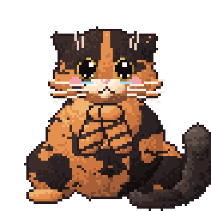

Yumak widget'ı
iPhone ana ekranında bugünün antrenmanı, haftanın ilerlemesi ve Yumak. İstersen kilit ekranına da eklenir. Ücretsiz Scriptable uygulamasıyla çalışır.

Kurulum (5 dakika)
- App Store'dan ücretsiz Scriptable uygulamasını indir.
- Kurulum betiğini kopyala. Bu küçük betik, asıl widget'ı her seferinde siteden alır; yenilikler kendiliğinden gelir.
- Scriptable'ı aç, sağ üstteki + ile yeni betik aç ve yapıştır. Üstteki adı Yumak yap, Bitti'ye bas.
- Yumak betiğine bir kez dokun. Şifreni sorar: sitede giriş yaptığın şifrenin aynısını yaz ve Kaydet. Yumak birkaç saniye düşünür, sonra bir daha sormaz. (Eski kişisel linkin varsa o da olur.)
- Ana ekranda boş bir yere basılı tut → sol üstteki Düzenle → Widget Ekle (ya da +) → Scriptable → boyutu seç → Widget Ekle.
- Eklenen widget'a basılı tut → Widget'ı Düzenle → Script: Yumak. Bitti! 🐾
Kilit ekranı
Kilit ekranına basılı tut → Özelleştir → Kilit Ekranı → saatin altındaki widget alanına dokun → Scriptable → eklenen kutuya dokun → Script: Yumak. Bugünün antrenmanı ve toplam ilerleme görünür.
Bildirimler
Yumak gün içinde kendi ağzından küçük bildirimler gönderir: su hatırlatmaları (10:30, 13:30, 16:30, 19:00), antrenman günü sabahı (09:30), yemekten sonra yürüyüş (20:15) ve gün işaretlenmediyse akşam 21:00'de "zincir tehlikede". Mutfaktaki listeye yeterince su işaretlediysen o saatin su hatırlatması gelmez. İlk açılışta Scriptable bildirim izni ister. Tek tek açıp kapatmak için Scriptable'da Yumak betiğine dokun → Bildirimler.
Bilmekte fayda var
Zincir (seri): tamamlanan her gün zincire bir halka ekler; dinlenme günleri zinciri bozmaz, uzatır. O gün sitede "tamamladım" denene kadar alev gri, Yumak üzgün 🥺 (akşam olunca iyice dramatik). İşaretlenince alev yanar, Yumak sevinir; 3, 7, 14, 21… günde parti var.
Widget'ı iOS kendi belirlediği aralıklarla (genelde yarım saatte bir) yeniler; gün değişince bugünü gösterir. Widget'a dokununca takvim açılır. Sadece izlemek isteyen, 4. adımda şifre yerine izleme linkini yapıştırabilir; widget hiçbir şeyi değiştirmez, sadece okur.